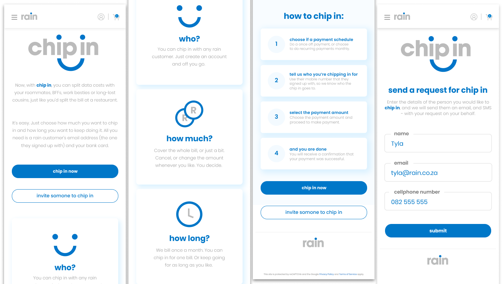
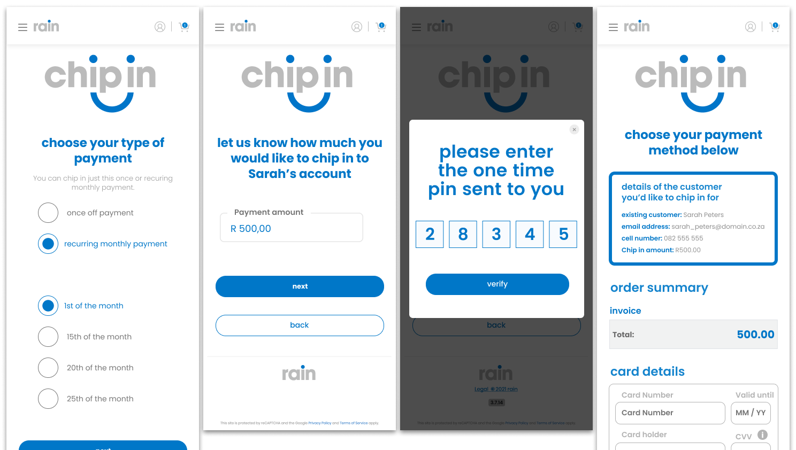
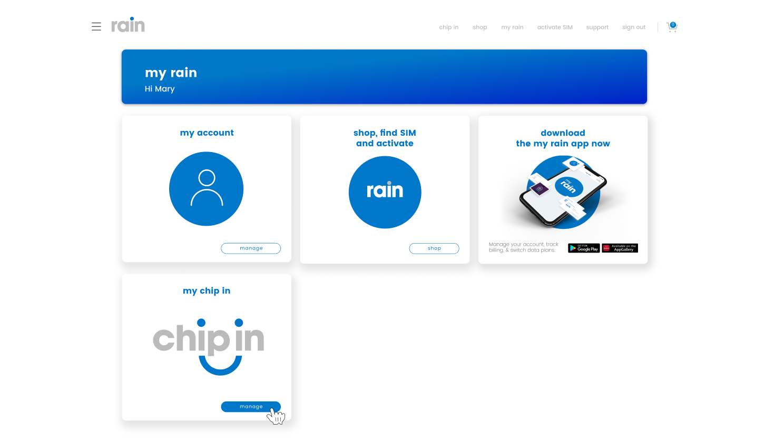

Making it easier to share the cost of staying connected.

Rain Chip In turns a familiar behaviour-sharing the cost of connectivity-into a simple digital experience. It allows someone to contribute towards another Rain customer's account, much like splitting a bill with a roommate, partner, or friend.
The Challenge
The experience needed to make a financial transaction feel effortless between two people who may not both be Rain customers.
A contributor had to be able to:
- create an account
- identify an existing Rain customer
- choose a contribution amount
- decide between a once-off or recurring payment
- Cancel contributions at any time
- complete payment with confidence
All without the flow feeling like a traditional banking or account setup process.

Designing the experience
The journey was structured around a few key decisions, introduced progressively to avoid cognitive overload.
Instead of searching for users, contributors identify a Rain customer using their cellphone number, with clear validation when no match is found.
Once identified, the user selects a contribution amount and chooses whether it should be a once-off or recurring payment. For recurring contributions, they also select a payment date and are reminded that the debit will repeat monthly.
After completion, contributors receive confirmation, and recipients are notified when a recurring contribution begins.
Beyond the transaction
Chip In was designed as an ongoing relationship, not a single payment.
Users can manage active contributions, update amounts, change payment dates, or cancel recurring payments. Payment methods and history are also accessible within the account experience.
This extends the product from a one-time action into a simple ongoing service.

The result
Chip In creates a direct bridge between people who want to help pay for connectivity and those who need it.
The experience balances simplicity and trust, guiding users from an informal intention to contribute through to secure payment and long-term management.
The result is a product that makes sharing the cost of connectivity feel as natural as sharing the bill itself.
